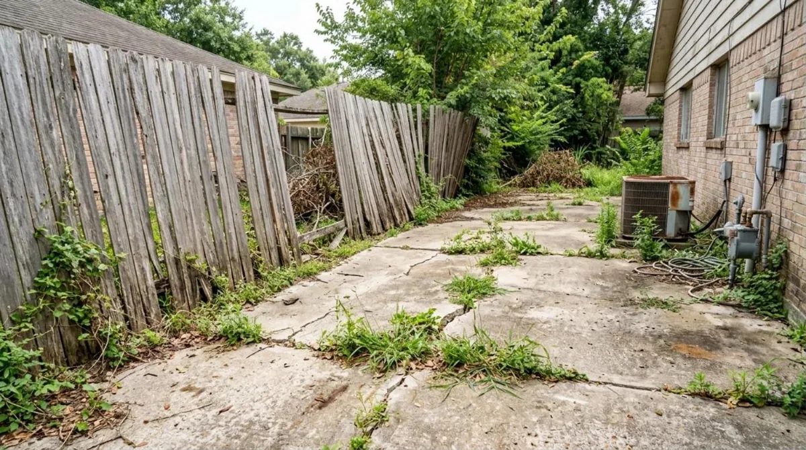
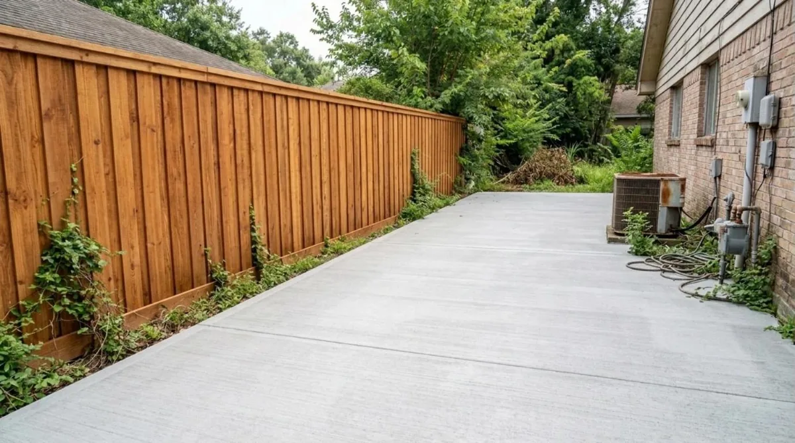

Houston fences and concrete, built right.


Look closer
What’s going on? Tap one. We’ll set up the right visit.
What we do
Cedar fences, driveways and patios from a local crew that shows up when it says it will.
- New fencesCedar and pine privacy fences, set on solid posts, with gates where you want them.Learn more about new fences →
- Fence repairLeaning posts, blown-down panels and rotted boards fixed or replaced.Learn more about fence repair →
- GatesWalk gates and wide drive gates hung straight so they swing and latch right.Learn more about gates →
- Concrete drivewaysTear-out, grading, rebar and a smooth broom finish that drains away from your home.Learn more about concrete driveways →
- Patios and slabsBack patios, pads for grills and outdoor kitchens, poured flat and level.Learn more about patios and slabs →
- Staining and sealingA fresh stain and seal that protects wood from Houston sun and rain.Learn more about staining and sealing →
The Free Fence and Slab Estimate
Thinking about a new fence or driveway? We come out, measure and give you written options the same day.
- Measured footage and layoutWe walk the property lines and mark every run.$150 value
- Cedar, pine or board-on-boardThree written prices side by side.$100 value
- 811 and HOA checkWe call Texas 811 before digging and help with HOA rules.Included
- Photos of your propertyYour measurements and notes saved to your portal.Included
How it works
- 1Book onlinePick a day and time. It lands on our calendar right away.
- 2We text before we arriveYou see who’s coming and when.
- 3Track it in your portalPhotos, updates and your invoice in one place.
- General liability insurance on every job
- Texas 811 called before every dig
- City permits pulled for right-of-way concrete
Stain & Seal Plan
Stain & Seal Plan
$69/mo
- Stain and seal every 2 years (up to 200 LF)
- Spring fence check
- 10% off repairs
Fence Care Plus
$89/mo
- Everything in Stain & Seal
- Up to 2 post re-sets a year after storms
- Priority repair after wind events
Questions
How much does a fence cost in Houston?
Most 6 ft wood privacy fences run $25 to $50 per linear foot installed. Pine is on the low end and cedar board-on-board is on the high end. You get the exact price in writing.
How much does a concrete driveway cost?
Expect about $8 to $15 per square foot for a standard driveway, so a two-car driveway often runs $5,000 to $9,000. Tear-out and extra thickness change the price.
Do I need a permit for a fence?
In Houston, a permit is only needed for fences over 8 ft or fences made of brick, block or concrete. Many HOAs have stricter rules, and we help with those forms.
Do you call 811 before digging?
Yes. Texas law says to call 811 at least 2 business days before digging, and we wait for the lines to be marked. It is free and it protects you.
Are you licensed and insured?
Texas has no state fence or concrete license. We carry general liability insurance and give you a copy before work starts. Driveway work in the city right-of-way needs a City of Houston permit, which we pull.
Book a free estimate.
No cost, no obligation. Storm damage? Tell us and we will look at it first.